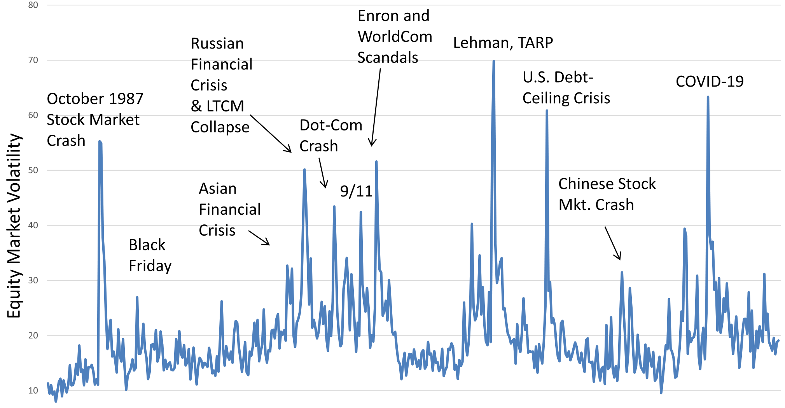
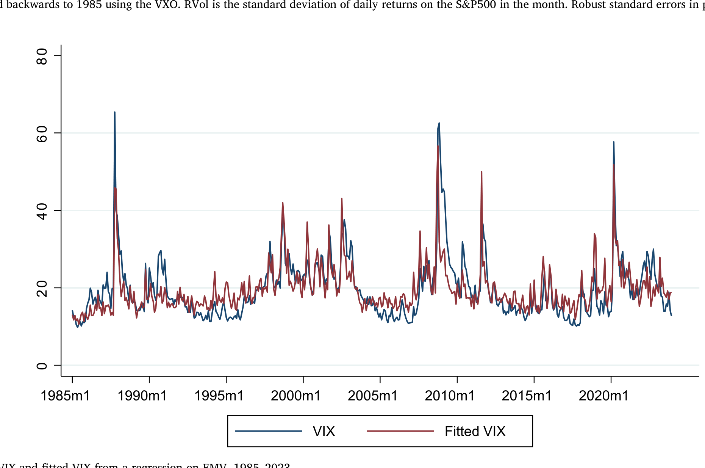
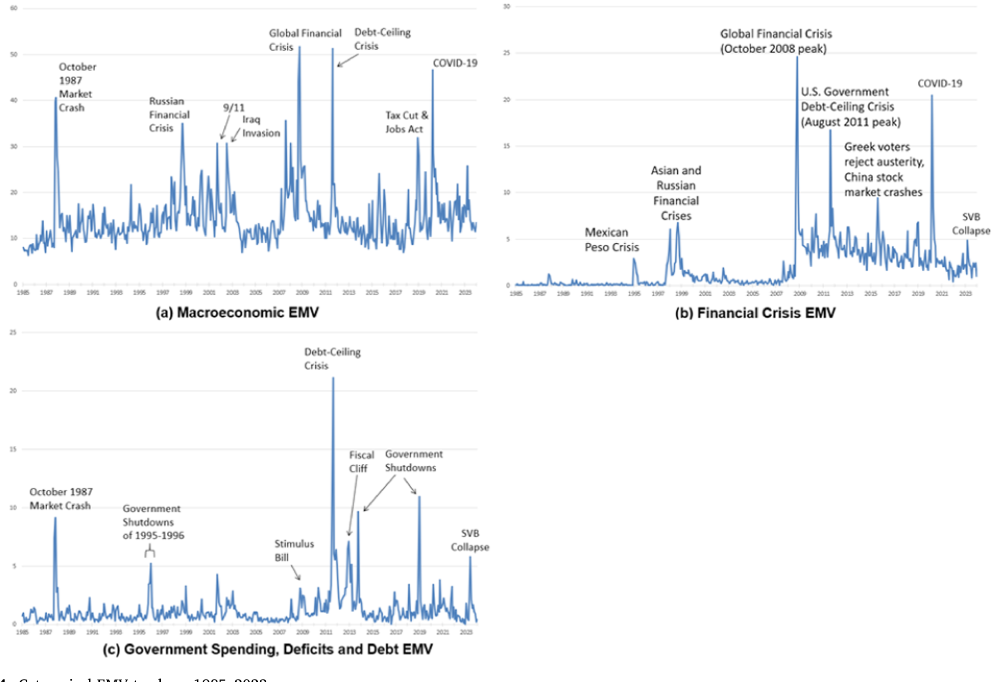
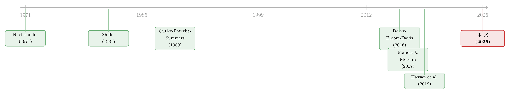

报纸是怎么「数」出股市恐慌的：把波动拆成四十个抽屉
本文读的是 Baker, Bloom, Davis & Kost (2026, Journal of Financial Economics)：他们用 11 家美国报纸的文章数量，构造了一个从 1985 年至今的「股市波动追踪器」(EMV)，它与 VIX 的月度相关系数高达约 0.8；更关键的是，他们把每一篇谈论波动的文章按内容拆进约 40 个「抽屉」，发现政策新闻是股市波动最大的来源之一——35% 的文章谈财政（多为税收）、30% 谈货币政策、25% 谈监管。波动不再是一团无法解释的迷雾，而被「记账」成了一份可以逐项清点的清单。
1 一个悬了四十年的「基本问题」
先从一句话讲起。2014 年，Robert Shiller 在他的诺奖演说里写道：金融市场的思想史，在一个最根本的问题上始终没能达成共识——到底是什么，最终造成了股票这类投机性资产价格的那些波动？
这听上去简单得不像一个未解之谜。可它恰恰是。早在 1981 年，Shiller 那篇经典论文就给出了一个令人不安的结论：股市的涨跌，根本无法用「未来真实股利按固定贴现率折现」来合理化——股价波动得太大了，大到现实的股利变化撑不起这种波动。这就是著名的「过度波动之谜」(excess volatility puzzle)。
于是金融学分成了两条大路。一条是理性派：既然股利解释不了，那一定是时变的预期收益（贴现率）在动——这正是后来 Cochrane 反复强调的「贴现率才是资产定价的中心议题」（关于这条线，可参见《贴现率：资产定价的中心议题》）。另一条是行为派：是非理性信念、套利限制、和一阵阵的「动物精神」(animal spirits) 把价格推离了基本面。
两条路吵了四十年，谁也没说服谁。
而这篇论文的聪明之处，在于它没有去选边站。
2 不去「解释」波动，而去「记账」
接着，一个自然的问题是：如果连理论家都说不清波动从何而来，我们还能做点什么？
作者的回答很「实证」：那就去清点它。无论你信efficient market还是信animal spirits，有一件事是双方都同意的——当市场剧烈波动时，报纸会铺天盖地地报道。在理性派看来，这些报道是「驱动未来盈利和贴现率预期变化的真实新闻」的目录；在 Shiller 派看来，这些报道则（不完美地）映照着当下的「集体心绪」。
妙就妙在这里：两种世界观下，报纸文本都是有用的。 它要么是真实新闻的catalog，要么是心绪变迁的镜子。所以与其卷进「谁对谁错」，不如先把这本「波动的账本」逐页记下来。
于是核心想法登场了：用报纸文章的数量，来度量市场对波动的关注程度。这正是这篇论文的全部出发点——一个叫 股市波动追踪器（Equity Market Volatility tracker, EMV） 的东西。
3 EMV 是怎么「数」出来的
然后，我们看具体怎么做。这套方法继承自同一批作者 2016 年那篇度量「经济政策不确定性」的名作（Baker, Bloom & Davis, 2016, 下称 BBD），但在选词上走了一条更省力的路。
他们先定下三组词：
- 经济类 (E)：{economic, economy, financial}
- 股市类 (M)：{"stock market", equity, equities, "Standard and Poors"（及变体）}
- 波动类 (V)：{volatility, volatile, uncertain, uncertainty, risk, risky}
一篇文章只有同时命中 E、M、V 三组词里各至少一个，才算一篇「EMV 文章」。
但真正关键的一步在于怎么从一堆候选词里挑出这个最终组合。BBD 当年靠人工读了 12,000 篇文章来定词表；而这次，作者偷了个巧——因为股市波动是可观测的（有 VIX），他们干脆让数据说话：把 M′ 和 V′ 的所有排列组合（2^5 × 2^6 = 2048 种）各自构造一个候选追踪器，然后看哪个组合在 1990–2015 年对 30 天 VIX 的 OLS 回归里 R² 最高，就选哪个。
这里有几处值得玩味的克制：
- 他们故意不用「Lehman Brothers」「Bernanke」「Iraq war」这种能大幅提升样本内拟合、却注定在样本外翻车的特异词；
- 他们甚至庆幸「VIX」这个词没被选进最优词表——因为大多数国家根本没有 VIX，留着它会损害方法的跨国可移植性；
- 整套词表在 2018 年就被锁死，此后再没改过。这意味着 2019 年至今的数据全是真·样本外——而 COVID、俄乌战争、中东冲突这些惊天动地的事件，都没让它的拟合表现退化。
把最优词表套到 11 家大报上，按月计数、按报纸内标准化、再跨报纸平均，最后乘一个比例让它的均值对齐 1985–2015 年的 VIX 均值，就得到了下面这条曲线。它在 1987 年股灾、1998 年俄罗斯危机、2008 年 9 月金融海啸、2011 年美国债务上限危机、以及 2020 年新冠爆发处，都准确地竖起了尖峰。

Figure 1: Newspaper-based equity market volatility tracker
数字上，EMV 与 VIX 的月度相关系数约 0.8，季度约 0.85。把 VIX 对 EMV 做回归取拟合值画出来，两条线几乎贴在一起——

Figure 2: VIX and fitted VIX from a regression on EMV
拟合也有「漏」的时候，而这些漏恰恰有意思：(i) 1987 黑色星期一，拟合 VIX 跳得不如真 VIX 猛；(ii) 1990 年伊拉克入侵科威特那次几乎完全没追上；(iv) 在 9·11、2011 债务上限这类突发事件后，真 VIX 的高位会持续，但报纸热度会随「新闻不再新鲜」而消退，于是 EMV 相对 VIX 偏低。加入一阶滞后 VIX 后，这类追踪误差基本就被吸收了。
4 真正的金矿：把波动拆进四十个抽屉
如果故事到此为止，它不过是又一个 VIX 的「报纸版替身」。但真正让这篇论文站住脚的，是下一步——分类。
既然已经锁定了「哪些文章在谈论股市波动」，作者就放开手脚，去解析这些文章究竟在谈什么。他们设了约 20 个一般经济类别 + 约 20 个政策类别，每个类别配一张词表。判断规则朴素到近乎天真：一篇 EMV 文章只要命中了某类别的词，就算「讨论了该话题」。一篇文章可以同时落进好几个抽屉——这是有意为之，因为现实里的波动叙事本就盘根错节。
构造类别追踪器的公式，是整篇论文的技术核心。它把「整体波动水平」按「该类别文章的占比」分摊下去：
这里 # 表示文章计数，c 是任意一个类别（比如 MonetaryPolicy）。直觉很清楚：整体波动有多高 × 这块波动里有多少在谈这个话题 = 这个话题贡献的波动。它本质上是一道「会计分摊」——把一块总量，按注意力的份额，拆给各个驱动力。
把这道分摊套到 40 个类别上，就得到一组随时间起伏的分类曲线：

Figure 4: Categorical EMV trackers, 1985–2023
清点的结果颇有冲击力：
- 商品市场 (Commodity Markets) 出现在超过
40%的 EMV 文章里，是最高频的一般类别；其次31%提及利率、29%提通胀、27%提 GDP 等广义数量指标、8%提金融危机。 - 政策这条线被拆得更细：
35%的文章涉及财政政策（绝大多数是税收）、30%提货币政策、25%提某种形式的监管、13%提国家安全。 - 最戏剧性的反转藏在贸易政策里：在 Trump 第一次当选前的二十年里，它对股市波动几乎是个「非因素」；而 2018 年 3 月中美贸易摩擦升级之后，它一跃成为波动的主导来源之一。
作者诚实地提醒：这些细分类别词表（带着「Brexit」「Northern Rock」这种特异词）高度本地化，换个国家、换个年代就得重写。可移植的是那 40 个类别本身，而非类别里的词。所以别把分类追踪器当成放之四海而皆准的指数——它更像一本针对美国、针对这个时代的「波动账本」。
值得一提的还有一个旁证：作者单独为石油市场裁了一个 EMV 追踪器，它与油价的隐含波动率、实现波动率都对得很齐——说明这套「按主题裁剪」的做法确实抓到了对应市场的真东西。
5 从宏观账本到公司层面的风险暴露
讲到这，故事还能再往前推一步。
整体 EMV 是个时间序列——它告诉你「这个月市场在为什么发愁」，但说不清「哪家公司更怕这种愁」。于是作者把报纸追踪器和公司 10-K 年报的文本分析叉乘起来：如果一家公司在年报里反复谈论利率、监管或贸易，而某个月份的 EMV 又恰好被这些话题主导，那这家公司在那个月就有更高的对应风险暴露。
这就得到了一组月度、公司层面的风险暴露度量。检验表明，它们能帮助解释公司实现波动率（realized volatility）的横截面结构及其随时间的演变——而且是在已经控制了公司固定效应和时间固定效应之后。换句话说，这不是「大盘一波动大家一起波动」的机械关联，而是在剥掉了「哪家公司天生波动大」「哪个月整体波动高」之后，仍然留下来的、由具体话题暴露驱动的横截面差异。
6 文献脉络
把这篇论文放回它的家谱里，会看得更清楚。
最早把「报纸」和「股价」联系起来的，是 Niederhoffer (1971)——他翻看 1950–1966 年《纽约时报》的大标题，研究「世界大事」与股市的关系。接着是 Shiller (1981) 投下的那颗炸弹：过度波动之谜，逼着整个领域去追问「波动到底从哪来」。Cutler, Poterba & Summers (1989) 把美国股市收益对宏观数据和「政治与世界事件」做回归，沮丧地发现：一半以上的股价变动，解释不了。

转折发生在文本计量工具成熟之后。同一批作者的 Baker, Bloom & Davis (2016) 用报纸造出了「经济政策不确定性指数」，并发现政策风险暴露更高的公司，其股价波动对政策不确定性的反应更强。几乎同时，Manela & Moreira (2017) 把机器学习用到《华尔街日报》头版，造出度量「稀有灾难」担忧的 NVIX，结论是政策风险、尤其是战争相关的担忧，是风险溢价变动的主要来源。Hassan et al. (2019) 则从财报电话会议里提炼出公司层面的「政治风险」，同样对公司股价波动有解释力。
这篇 2026 年的论文，正坐落在这条脉络的交汇点上：它既继承了 BBD 的报纸计数法，又把 Manela–Moreira 的「波动归因」、Hassan 等人的「公司层面风险」合并进同一个框架，并用约 40 个透明、可复制、可实时更新的类别，把「波动的账」一笔一笔记清。它呼应的理论根基，是 Pastor & Veronesi (2012, 2013) 那套「政府政策本身就是经济不确定性来源」的模型。
7 评论与延伸（Q&A + 研究方向）
(a) 几个可能的疑问
Q：这不就是 VIX 的「报纸复刻版」吗？多此一举？
不是。VIX 只给你一个标量——市场有多怕，却不告诉你在怕什么。EMV 的全部价值在第二步：它把这个标量拆解成约 40 个可解释的来源，还能往前回溯到 1928 年（VIX 只到 1990 年），并能为没有 VIX 的国家提供对应度量。它是 VIX 的「成分分析」，不是替身。
Q：用「文章数量」当波动度量，难道不会被报纸自身的报道偏好污染？
会，而且作者并不回避。Shiller 本人就说过「媒体倾向于报道当下有趣的话题，而非读者已不感兴趣的有用事实」。但论文的立场是：无论你把报纸看作「真实新闻的目录」还是「集体心绪的镜子」，它都是有信息的——而 0.8 的样本外相关性说明，这种「污染」至少没有大到让度量失效。
Q：靠 R² 最高来选 2048 个排列中的一个，这难道不是赤裸裸的过拟合？
这是最该警惕的地方。作者的辩护有三：起点词表极其精简（每次回归基本只有一个解释变量）、刻意剔除特异词、并且 2018 年锁死词表后留出了 5 年以上的样本外检验。样本外不退化，是对过拟合质疑最有力的回应——但「在 2048 个里挑冠军」这件事本身，仍值得读者把它记在心里。
Q：35% 谈财政、30% 谈货币，可一篇文章能同时算进好几类，这些百分比加起来远超 100%，怎么读？
这些是重叠的份额，不是互斥的饼图切片。作者明说「不画过于锋利的类别边界」。所以正确的读法是「有多大比例的波动叙事触及了这个话题」，而非「这个话题独占了多少波动」。它衡量的是注意力的广度，不是排他的归因。
Q：它能用来预测波动吗，还是只能事后描述？
论文的定位主要是度量与归因，不是预测 alpha。EMV 与当期 VIX 高度相关，加入滞后项后当期项仍显著；但它的卖点是「告诉你波动由什么构成」，而不是「明天波动会不会上升」。把它当因果预测器用，要格外小心。
Q：贸易政策从「非因素」到「主导」的跳变，是真信号还是 Trump 时代媒体的措辞变化？
两者难以完全分开——这正是文本方法的内在张力。但它与 2018 年 3 月中美关税升级在时间上严丝合缝，且石油、宏观等其它裁剪追踪器都能与各自的硬指标对齐，这给了「它抓的是真东西」一定的可信度。
(b) 几个可能的研究问题与提案
1. 把 EMV 类别追踪器搬到公司债与信用利差上。
【经济故事】股票波动与信用利差由部分重叠、部分不同的力量驱动。货币政策、监管、贸易这些类别，对信用市场波动的贡献结构，很可能与对股市的不一样——比如监管新闻对银行债的冲击应远大于对股票。 【可行性】高。EMV 类别数据公开（policyuncertainty.com），信用利差有 TRACE + Mergent FISD。可直接把公司层面风险暴露度量复制到债券实现波动 / 利差变动上，控制公司与时间固定效应。识别上是关联而非因果，但作为描述性证据完全 doable。
2. 外资持有人会不会放大「政策类」波动的传导？
【经济故事】当政策（尤其贸易、国家安全）新闻主导市场时，外资持有人可能比本土投资者更敏感、更易撤离，从而放大这类特定话题的波动传导。 【可行性】中。需要 EMV 的政策类追踪器 × 公司外资持股（如 13F / FactSet / 各国持仓数据库）。识别可用「政策类 EMV 冲击 × 事前外资持股」的交互项。难点是外资持股的内生性，需要工具或准自然实验来支撑因果解读。
3. 政策类波动叙事，是否预示流动性的蒸发？
【经济故事】Nagel (2012) 证明 VIX 高度预测流动性供给的回报。一个自然的细化是：是不是政策类的波动（而非商品、宏观类）尤其会让做市商收紧库存、抽走流动性？ 【可行性】中。EMV 政策追踪器 × 公司债 / 股票的买卖价差、Amihud 非流动性指标。可做面板回归，看不同类别 EMV 对流动性的差异化冲击。数据齐全，识别为关联性，doable。
4. 把类别追踪器跨国复制，检验「政策波动」的全球同步性。
【经济故事】作者强调方法可移植到任何有数字报纸档案的国家。那么各国的「货币政策类」波动是否随美联储同步？这能为「全球金融周期」(Rey, 2013) 提供一个按话题分解的新视角。 【可行性】中偏低。需为多国重建报纸语料与类别词表（本地化成本高，作者已坦言），且各国报纸覆盖与可得性参差。概念诱人，工程量大。
5. 用大语言模型重做归因，与本文的「数词」法对照。
【经济故事】作者特意强调自己方法相对 AI 的优点：透明、可复制、不需全文访问。一个有价值的检验是：用 LLM 对同一批文章做归因，看两者的类别份额、时间序列是否一致——一致则验证稳健性，不一致则暴露各自的偏差。 【可行性】高。EMV 文章的检索条件公开，可在可获得全文的报纸子集上跑 LLM 分类，与作者的词表计数逐月对比。方法论贡献明确，doable。
8 我的判断与参考文献
贡献。 这篇论文最大的价值不在「又造了一个波动指数」，而在它提供了一种纪律性的记账法：把一团历来无法解释的总量波动，透明地、可复制地、可实时更新地拆成约 40 个可解释的来源，并一路下沉到公司层面。它聪明地绕开了「理性 vs 行为」的世纪争论——不去裁判，而去编目——这种「先把现象量清楚」的实证姿态，本身就是对那个四十年悬案的一种推进。把整套方法在 2018 年锁死、留出真样本外，更是难得的自律。
对识别的担忧。 三点。其一，从 2048 个排列里选 R² 冠军，过拟合的幽灵始终在场，样本外稳健只是缓解、并未根除。其二，整篇论文是度量与关联，不是因果——「政策新闻占 30%」不等于「政策导致了 30% 的波动」，叙事归因与真实驱动之间隔着媒体的镜片。其三，公司层面结果虽控制了双向固定效应，但「年报谈某话题」与「该公司确实暴露于该风险」之间，仍有度量误差和反向因果的空间。
后续想看到的。 我最想看的，是把这套类别追踪器从股票搬到信用市场：信用利差的波动，按话题拆开后会不会呈现出与股票截然不同的结构？以及，当政策类波动主导时，谁先撤——外资、做市商、还是散户？这恰是把一份漂亮的「波动账本」，变成一把能撬动因果问题的杠杆的地方。
参考文献
- Baker, S.R., Bloom, N., Davis, S.J. (2016). Measuring economic policy uncertainty. Quarterly Journal of Economics 131(4), 1593–1636.
- Baker, S.R., Bloom, N., Davis, S.J., Sammon, M. (2024). What triggers stock market jumps? NBER Working Paper 28687 (revised).
- Cutler, D.M., Poterba, J.M., Summers, L.H. (1989). What moves stock prices? Journal of Portfolio Management 15(3), 4–12.
- Hassan, T.A., Hollander, S., van Lent, L., Tahoun, A. (2019). Firm-level political risk: measurement and effects. Quarterly Journal of Economics 143(4), 2135–2202.
- Manela, A., Moreira, A. (2017). News implied volatility and disaster concerns. Journal of Financial Economics 123(1), 137–162.
- Nagel, S. (2012). Evaporating liquidity. Review of Financial Studies 25(7), 2005–2039.
- Niederhoffer, V. (1971). The analysis of world events and stock prices. Journal of Business 44, 193–219.
- Pastor, L., Veronesi, P. (2013). Political uncertainty and risk premia. Journal of Financial Economics 110(3), 520–545.
- Rey, H. (2013). Dilemma not trilemma: the global financial cycle and monetary policy independence. Federal Reserve Bank of Kansas City Economic Policy Symposium.
- Shiller, R.J. (1981). Do stock prices move too much to be justified by subsequent changes in dividends? American Economic Review 71(3), 421–436.
- Shiller, R.J. (2014). Speculative asset prices. American Economic Review 104(6), 1486–1517.